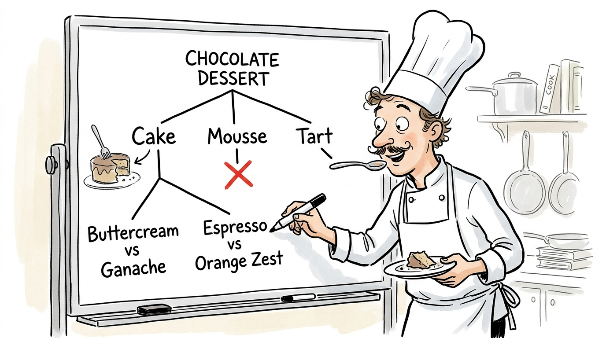
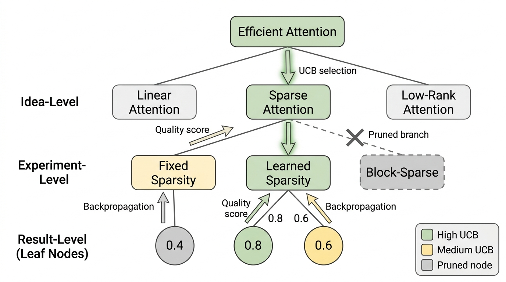

Prerequisites
This section builds directly on the six-phase research loop and novelty filter from Section 53.1. You should also be familiar with the coding agent patterns from Section 40.1 and the concept of agentic tool use from Chapter 10.
In August 2024, Sakana AI released "The AI Scientist," the first system to automate the entire machine learning (ML) research pipeline from idea generation to paper writing to peer review, all for about \$15 per paper. Six months later, AI Scientist v2 replaced the rigid template with agentic tree search, enabling open-ended research that earned acceptance at an ICLR 2025 workshop. Meanwhile, DeepMind's FunSearch (Nature, December 2023) demonstrated that LLMs can discover genuinely novel mathematical constructions by evolving programs rather than writing papers. This section dissects all three systems, extracts their architectural lessons, and maps their failure modes.
1. AI Scientist v1: Template-Based ML Research
What happens when you hand an LLM a working ML codebase, a GPU budget of \$15, and the instruction "find something publishable"? The original AI Scientist (Lu et al., 2024) answers with a fixed template structure. The user supplies a research template: a working codebase for a specific ML problem (diffusion models, language modeling, or learning dynamics), a description of the research area, and baseline results. The system generates variations, executes them, and writes up the findings.
A research template, in this context, is a self-contained, runnable ML project: training scripts, data loaders, evaluation code, baseline metrics, and a skeleton LaTeX paper. The agent modifies a single component (the noise schedule, the optimizer) while the rest of the pipeline keeps working. This constraint converts "do ML research" into "vary one piece of a working system and measure the effect," which is why the \$15 price tag works. Because the template already trains and evaluates correctly, the agent only proposes and implements a delta rather than architecting an entire experiment from scratch. Use a template-based approach to explore incremental variations reliably and cheaply; switch to an open-ended agent (like v2) when the research question itself is unclear or spans multiple codebases.
1.1 Architecture
AI Scientist v1 consists of five sequential stages, each implemented as a prompted large language model (LLM) call (Claude 3.5 Sonnet, GPT-4o, or Llama 3.1 405B in their experiments). Figure 53.1 shows this pipeline end to end.
- Idea Generation. The LLM receives the template description and baseline results, then generates a list of research ideas. Each idea is a structured JSON object with fields for the hypothesis, proposed experiment modifications, and expected outcomes. A novelty check queries Semantic Scholar (an academic search engine indexing millions of papers) to filter out ideas that duplicate existing work.
- Experiment Implementation. The LLM modifies the template code to implement the proposed idea. It uses Aider (an AI coding assistant) in a loop: write code, run tests, fix errors, repeat. The maximum number of coding iterations is capped at 5.
- Experiment Execution. The modified code runs on a single graphics processing unit (GPU). Results (metrics, plots, logs) are captured automatically. If the run crashes, the system returns to the implementation phase for debugging.
- Paper Writing. The LLM generates a LaTeX paper following the standard ICML/NeurIPS format. It fills in each section (introduction, related work, methods, experiments, conclusion) using the template's base paper as a scaffold, replacing the results and analysis with the new findings.
- Automated Peer Review. A separate LLM call evaluates the generated paper on a 1-10 scale across multiple criteria: soundness, significance, novelty, clarity, and overall quality. This mimics the structure of a real conference review form.
The template is both the strength and the limitation of AI Scientist v1. By providing working code, baseline results, and a paper skeleton, the template reduces the search space from "all possible ML research" to "variations on this specific method." This makes the problem tractable: the system only needs to propose small modifications, not build an entire research program from scratch. But it also means the system cannot make larger conceptual leaps, combine ideas from different subfields, or work on problems that do not fit an existing template. AI Scientist v2 addresses this limitation.
1.2 Results and Failure Modes
In their evaluation, AI Scientist v1 generated over 100 papers across three ML domains. The automated peer review scores ranged from 3 to 8 on a 10-point scale, with a mean of approximately 4.5 (below typical conference acceptance thresholds of 6+). Key failure modes include:
- Comparison fabrication. The system sometimes generates comparison numbers that do not correspond to actual experimental runs. It may hallucinate baseline results or misreport its own numbers.
- Overclaiming. The paper-writing stage tends to describe modest improvements in grandiose language, claiming "significant advances" for 0.5% accuracy gains.
- Code-result mismatch. When the experiment code contains bugs that do not cause crashes (silent errors), the system cannot detect the problem and writes a paper about incorrect results.
- Scope creep. The system sometimes proposes modifications that are orthogonal to the template's research question, producing papers that are technically valid but scientifically unfocused.
Common Misconception
A common misconception is that these AI scientist systems are "doing science autonomously" in the way a human researcher does. They are not. AI Scientist v1 and v2 perform constrained optimization over a narrow, pre-defined search space: they vary parameters, run code, and report numbers, but they do not form genuine understanding, question their own assumptions, or recognize when an unexpected result points toward a fundamentally new research direction. The systems automate the mechanical steps of research (coding, running, writing), not the intellectual core of scientific reasoning.
The following code demonstrates the core idea generation step from AI Scientist v1, showing how hypotheses are generated and filtered. The example template uses a DDPM (Denoising Diffusion Probabilistic Model), a generative model that learns to reverse a gradual noising process to produce images from pure noise.
import json
from anthropic import Anthropic
def generate_research_ideas(
template_description: str,
baseline_results: dict,
existing_ideas: list[str],
n_ideas: int = 5,
) -> list[dict]:
"""Generate research ideas in the style of AI Scientist v1.
Returns structured ideas with hypothesis, modifications,
and expected outcomes.
"""
client = Anthropic()
prompt = f"""You are an AI research scientist. Given the following
research template and baseline results, generate {n_ideas} novel
research ideas.
TEMPLATE DESCRIPTION:
{template_description}
BASELINE RESULTS:
{json.dumps(baseline_results, indent=2)}
EXISTING IDEAS (do not duplicate these):
{json.dumps(existing_ideas, indent=2)}
For each idea, provide a JSON object with:
- "title": concise title (under 15 words)
- "hypothesis": testable scientific hypothesis
- "modifications": list of specific code changes needed
- "expected_outcome": what you expect to observe
- "risk_level": "low", "medium", or "high"
- "estimated_compute": approximate GPU hours needed
Return a JSON array of {n_ideas} ideas, ordered by expected
impact (highest first). Only propose ideas that can be tested
by modifying the existing template code."""
response = client.messages.create(
model="claude-sonnet-4-20250514",
max_tokens=4096,
messages=[{"role": "user", "content": prompt}],
)
# Parse the JSON response
ideas = json.loads(response.content[0].text)
# Filter by novelty (simplified; v1 uses Semantic Scholar)
novel_ideas = [
idea for idea in ideas
if idea["title"].lower() not in
[e.lower() for e in existing_ideas]
]
return novel_ideas[:n_ideas]
# Example usage with a diffusion model template
ideas = generate_research_ideas(
template_description=(
"2D diffusion models on low-resolution image datasets. "
"The template implements a DDPM with a U-Net backbone, "
"trained on CIFAR-10 with cosine noise schedule."
),
baseline_results={
"fid_score": 12.4,
"training_time_hours": 2.5,
"parameters": "35M",
},
existing_ideas=[
"Adaptive noise schedules for faster convergence",
"Classifier-free guidance at low resolution",
],
)
for idea in ideas:
print(f" {idea['title']}: {idea['hypothesis']}")
2. AI Scientist v2: Agentic Tree Search
These failure modes all trace back to the same root cause: v1's rigid template locks the agent into a narrow corridor with no way to recover from a wrong turn, and no independent check on whether the results are real.
AI Scientist v2 (Yamada et al., 2025) addresses v1's key limitation: the rigid template structure. Instead of requiring a pre-built codebase, v2 gives the agent access to a coding environment and lets it explore the research space freely using agentic tree search.
2.1 Tree Search Over Research Space
Without structured exploration, an AI research agent that takes a wrong turn early (a flawed hypothesis, a buggy baseline) has no way to recover; it plows forward, wastes its entire compute budget, and produces a paper about artifacts. Tree search gives the agent the ability to backtrack, and that single capability is what separates a \$15 dead end from a workshop-accepted contribution.
The core insight of v2 treats research as a tree search problem. Each node represents a research state: an idea, a partial experiment, or a set of results. Each edge represents a research action: proposing a modification, writing code, running an experiment, or analyzing results. The agent explores this tree using a variant of Monte Carlo Tree Search (MCTS) adapted for scientific discovery.
Mental Model

Think of MCTS over the research space like a chef developing a new recipe. The chef starts with a broad concept (say, a chocolate dessert), then branches into options: cake, mousse, or tart. She tastes a quick prototype of the cake (that is the "simulation" step), finds it promising, and branches further: buttercream vs. ganache, adding espresso vs. orange zest. Each tasting updates her sense of which branch is worth exploring next. If the mousse prototype flopped, she does not keep refining it; she backtracks to the tart. The UCB formula is the chef's intuition formalized: it ensures she does not obsessively perfect one branch (exploitation) while ignoring branches she has barely tasted (exploration). Just as the chef allocates limited evening hours across tastings, the AI Scientist v2 agent allocates a fixed compute budget across research directions, always choosing the next experiment that maximizes the chance of finding something genuinely good.
The search tree has three levels: Figure 53.2.1 illustrates AI Scientist v2 agentic tree search over research space.

- Idea-level nodes. Each represents a research direction. The agent can expand an idea node by proposing sub-ideas or modifications.
- Experiment-level nodes. Each represents a specific experiment to test an idea. The agent can expand by modifying experimental parameters or adding controls.
- Result-level nodes. Each represents an experimental outcome. The agent uses these to decide whether to continue exploring the current branch or backtrack to try a different idea.
The search uses an Upper Confidence Bound (UCB) variant to balance exploration (trying new ideas) against exploitation (refining promising ideas):
$$ \text{UCB}(n) = \bar{Q}(n) + c \sqrt{\frac{\ln N(p)}{N(n)}} $$where \(\bar{Q}(n)\) is the average quality score of results under node \(n\) (using the composite quality metric from Section 53.1), \(N(n)\) is the visit count for node \(n\), \(N(p)\) is the visit count for the parent node, and \(c\) is the exploration constant.
Consider an AI Scientist v2 agent exploring the space of attention mechanisms for language models. The root node is the research area "efficient attention." The agent first proposes three idea-level children: linear attention, sparse attention, and low-rank attention. It runs a quick experiment on linear attention (UCB selects it because all nodes have equal visit counts initially), finding modest improvement. It then explores sparse attention, which yields better results. The UCB formula now favors further exploration of sparse attention, so the agent proposes three sub-ideas: fixed sparsity patterns, learned sparsity, and block-sparse attention. After exploring all three and finding that learned sparsity performs best, the agent writes a paper about the full exploration, including the negative results as ablations. The tree structure lets it report not just the winning result but the systematic exploration that led to it.
2.2 From Templates to Open-Ended Research
The v2 agent has access to a full development environment: it can create files, install packages, write arbitrary code, and execute experiments. The environment is containerized for safety (see the sandboxing discussion in Section 53.4). This open-endedness comes with a risk: the agent might spend all its compute budget on infrastructure setup rather than research. V2 mitigates this with two mechanisms:
- Compute budgets per tree level. Idea-level exploration (brainstorming, literature search) is cheap. Experiment-level work (coding, debugging) is more expensive. Result-level work (training, evaluation) is most expensive. The system allocates budgets proportionally.
- Early termination heuristics. If an experiment's training loss is not decreasing after 20% of the allocated epochs, or if the code has crashed more than 3 times during implementation, the system prunes that branch and backtracks.
The following code shows a simplified version of v2's tree search over the research space.
from dataclasses import dataclass, field
import math
import random
@dataclass
class ResearchNode:
"""A node in the research exploration tree."""
idea: str
level: str # "idea", "experiment", "result"
quality_scores: list[float] = field(default_factory=list)
children: list["ResearchNode"] = field(default_factory=list)
visit_count: int = 0
parent: "ResearchNode | None" = None
@property
def avg_quality(self) -> float:
if not self.quality_scores:
return 0.0
return sum(self.quality_scores) / len(self.quality_scores)
def ucb(self, exploration_c: float = 1.41) -> float:
"""Upper Confidence Bound for research exploration."""
if self.visit_count == 0:
return float("inf") # unexplored nodes first
parent_visits = (
self.parent.visit_count if self.parent else 1
)
exploitation = self.avg_quality
exploration = exploration_c * math.sqrt(
math.log(parent_visits) / self.visit_count
)
return exploitation + exploration
class ResearchTreeSearch:
"""Simplified AI Scientist v2 tree search."""
def __init__(
self,
root_topic: str,
max_iterations: int = 50,
max_depth: int = 3,
):
self.root = ResearchNode(
idea=root_topic, level="idea"
)
self.max_iterations = max_iterations
self.max_depth = max_depth
def select(self, node: ResearchNode) -> ResearchNode:
"""Select the most promising child by UCB."""
if not node.children:
return node
best = max(node.children, key=lambda c: c.ucb())
if best.children and random.random() > 0.3:
return self.select(best)
return best
def expand(
self, node: ResearchNode, generate_fn
) -> ResearchNode:
"""Expand a node by generating a child idea."""
child_ideas = generate_fn(
parent_idea=node.idea,
existing_children=[c.idea for c in node.children],
)
if not child_ideas:
return node
next_level = {
"idea": "experiment",
"experiment": "result",
"result": "result",
}
child = ResearchNode(
idea=child_ideas[0],
level=next_level[node.level],
parent=node,
)
node.children.append(child)
return child
def backpropagate(
self, node: ResearchNode, quality: float
) -> None:
"""Propagate quality score up the tree."""
current = node
while current is not None:
current.quality_scores.append(quality)
current.visit_count += 1
current = current.parent
def search(self, generate_fn, evaluate_fn) -> ResearchNode:
"""Run the tree search and return the best node."""
for _ in range(self.max_iterations):
# Selection
selected = self.select(self.root)
# Expansion
if selected.level != "result":
expanded = self.expand(selected, generate_fn)
else:
expanded = selected
# Evaluation (simulation in MCTS terms)
quality = evaluate_fn(expanded.idea)
# Backpropagation
self.backpropagate(expanded, quality)
# Return the highest-quality leaf
return self._best_leaf(self.root)
def _best_leaf(self, node: ResearchNode) -> ResearchNode:
if not node.children:
return node
best_child = max(
node.children, key=lambda c: c.avg_quality
)
return self._best_leaf(best_child)
The tree search above is implemented from scratch, requiring ~80 lines of code for a simplified version. LangGraph provides a stateful graph execution framework that handles the tree structure, checkpointing (so you can resume interrupted searches), and conditional branching natively. A LangGraph implementation of the same search reduces to a state graph definition (~30 lines) plus node handler functions. LangGraph also provides built-in persistence, which means the search tree survives process restarts; the from-scratch version would need explicit serialization.
3. FunSearch: Evolving Programs for Mathematical Discovery
Both AI Scientist versions frame discovery as producing papers, but a paper is only a report of a finding, not the finding itself; what if the system's output were the discovery directly?
FunSearch (Romera-Paredes et al., 2024) takes a fundamentally different approach from the AI Scientist systems. Rather than generating papers, FunSearch generates programs. Rather than using tree search, FunSearch uses evolutionary computation (an optimization strategy that maintains a population of candidate solutions, iteratively selecting the fittest and generating new candidates through variation). The result is a system that discovered genuinely novel mathematical constructions, published in Nature.
3.1 Architecture
FunSearch combines an LLM (Codey, a code-specialized variant of PaLM 2) with an evolutionary algorithm (as of 2025, Google has superseded PaLM 2 with the Gemini model family; AlphaEvolve, discussed below, uses Gemini):
- Program representation. The search target is a Python function that solves a specific problem (e.g., constructing a large cap set (a subset of vectors in which no three elements sum to zero) in \(\mathbb{F}_3^n\) (the vector space of dimension \(n\) over the three-element field)). The function signature and evaluation criteria are fixed; the function body is what the LLM generates.
- Population. A pool of candidate programs, ranked by their scores on the evaluation function. The population starts with a simple seed program (often a trivial solution or a known baseline).
- Mutation via LLM. The LLM receives 2-3 high-scoring programs from the population and generates a new program that combines or improves upon their strategies. This is the creative step: the LLM acts as a mutation operator that can make semantically meaningful changes, unlike random character-level mutation.
- Evaluation. Each new program is executed and scored. Programs that crash, time out, or produce invalid output are discarded. Valid programs are inserted into the population if they score above a minimum threshold.
Checkpoint
So far: FunSearch fixes a target function signature, maintains a ranked population of candidate implementations, uses the LLM to produce semantically meaningful mutations of high-scoring candidates, and scores each new candidate with a deterministic evaluator that discards invalid programs.
- Island model (a parallel evolutionary strategy borrowed from population genetics, where isolated subpopulations evolve independently and occasionally exchange their best individuals). Multiple independent populations ("islands") evolve in parallel. Periodically, the best programs from each island are shared with other islands. This prevents premature convergence to local optima.
Figure 53.2 illustrates this architecture, showing how multiple island populations feed candidate programs to the LLM mutation operator and receive scored variants back from the evaluator.
3.2 Results and Significance
FunSearch achieved two significant mathematical discoveries:
- Cap set problem. For the cap set problem in \(\mathbb{F}_3^8\), FunSearch discovered constructions larger than any previously known according to the published results, surpassing results obtained by human mathematicians over decades. The discovered construction for \(n = 8\) has 512 elements, improving on the previous best of 496, a record that had stood reportedly for years despite sustained effort by professional mathematicians.
- Online bin packing. FunSearch found new heuristics for online bin packing (where items arrive one at a time and must be irrevocably assigned to a fixed-capacity bin) that outperform hand-designed heuristics on standard benchmarks. The discovered heuristics exploit structural patterns that human designers had not considered.
The critical difference between FunSearch and AI Scientist is the evaluation function. In FunSearch, correctness is verified automatically: a program either produces a valid cap set of the claimed size or it does not. There is no ambiguity, no statistical testing, no subjective judgment. This separation of generation from evaluation makes FunSearch's discoveries mathematically rigorous in a way that AI Scientist's ML papers are not. In short: the safest AI scientist is one whose creativity is checked by an evaluator it cannot fool.
FunSearch's success comes from a precise division of labor. The LLM provides the creative variation (mutation), but it never evaluates its own output. Evaluation is handled by a deterministic function that is provably correct. The LLM does not need to "understand" the mathematics; it needs to produce syntactically valid programs that an independent evaluator can score. This separation of generation from evaluation is the most robust architecture pattern across all AI scientist systems. When you build your own system (Section 53.4), preserve this separation: never let the generator judge its own output.
4. Comparative Analysis
With all three architectures on the table, we can now ask what a system builder should actually choose: when does each design pay off, and where does each break down?
The three systems reveal a tradeoff space along three axes: scope, rigor, and autonomy.
| Dimension | AI Scientist v1 | AI Scientist v2 | FunSearch |
|---|---|---|---|
| Domain | ML (template-bound) | ML (open-ended) | Discrete math, combinatorics |
| Output | LaTeX paper | LaTeX paper | Python function |
| Exploration | Sequential generation | Tree search (MCTS) | Evolutionary (island model) |
| Evaluation | Self-review (LLM) | Self-review (LLM) | Deterministic evaluator |
| Novelty check | Semantic Scholar search | Semantic Scholar + embedding | Score exceeds known best |
| Cost per output | ~\$15 | ~\$50-100 | ~\$1000+ (many LLM calls) |
| Best result | Below acceptance threshold | ICLR 2025 workshop | Nature 2023 publication |
| Rigor guarantee | None (self-assessed) | None (self-assessed) | Mathematical proof by construction |
5. Lessons for System Builders
From these three systems, we extract five architectural lessons that apply to any AI scientist system:
- Separate generation from evaluation. FunSearch's success and AI Scientist v1's failure mode (comparison fabrication) both illustrate the same principle: the generator must never evaluate its own output. Use an independent evaluator, preferably one that does not rely on LLM judgment for correctness.
- Structured exploration beats sequential generation. V2's tree search outperforms v1's sequential idea generation because it can backtrack from dead ends and deepen promising directions. When building your own system, invest in exploration infrastructure.
- Templates trade novelty for reliability. V1's templates guarantee that the generated code will at least run (the base template works), at the cost of limiting the system to incremental modifications. V2's open-ended approach is more creative but more likely to produce code that crashes or experiments that do not make sense.
- Budget allocation determines output quality. All three systems must decide how to allocate a fixed compute budget across idea generation, experimentation, and writing. Over-investing in idea generation (many ideas, few tested) produces speculative work. Over-investing in experimentation (few ideas, extensively tested) produces thorough but unambitious work. The right balance depends on the domain.
- Automated peer review is unreliable. AI Scientist v1's automated reviewer gives scores that correlate weakly with human expert judgment (\(r \approx 0.3\) in their ablation). Never use automated review as the sole quality gate. Section 53.4 adds human gates at critical junctures for this reason.
Here is a realistic cost breakdown for a single AI Scientist v1 run on a diffusion model template, using Claude 3.5 Sonnet: idea generation (5 ideas, ~2K tokens each input/output): \$0.30. Novelty checking via Semantic Scholar API: \$0.00 (free API). Experiment coding (5 Aider iterations per idea): \$3.00. GPU time (5 training runs, 1 hour each on an A100): \$10.00. Paper writing (one full paper): \$1.50. Automated peer review: \$0.20. Total: \$15.00. The GPU cost dominates. For AI Scientist v2 with tree search, the LLM costs scale roughly 3x (more exploration), bringing the total to \$50 to \$100 depending on tree depth. FunSearch costs are higher because the evolutionary loop requires thousands of LLM calls, but each call is cheaper (generating a short function, not a full paper).
Research Frontier
In 2025, DeepMind extended the FunSearch paradigm with AlphaEvolve (Novikov et al., 2025), a coding agent that pairs LLM-driven program evolution with automated evaluators to optimize across the full spectrum of computational problems, not just combinatorics. AlphaEvolve reportedly discovered a new matrix multiplication algorithm for 4x4 complex-valued matrices that improves on the best known result (held, according to the authors, for over 50 years), and it found provably better scheduling heuristics for Google's data center workloads. The key architectural advance over FunSearch is the use of an "evolutionary controller" that coordinates multiple LLMs (a large Gemini model for creative leaps and a smaller, faster model for local refinements), dynamically routing mutations based on the current population's diversity. This suggests that multi-model evolutionary systems, where different LLMs serve different roles in the search, may be more effective than single-model approaches for open-ended program discovery.
Try It: Build a Mini FunSearch for Sorting Networks
You can build a simplified FunSearch loop on your laptop using only Python and an LLM API. The goal: evolve a Python function that generates small, efficient sorting networks.
Step 1. Write a seed function def sorting_network(n: int) -> list[tuple[int, int]] that returns a list of comparator pairs for sorting n elements. Start with the trivial bubble-sort network (all adjacent pairs, repeated n times).
Step 2. Write a deterministic evaluator: given a sorting network, test it on all \(2^n\) binary input sequences (feasible for \(n \le 12\)) and score it as the number of correctly sorted sequences divided by \(2^n\), with a tiebreaker that penalizes longer networks (fewer comparators is better).
Step 3. Create a population list of size 10. Seed it with 10 copies of your bubble-sort network.
Step 4. In a loop (30 to 50 iterations), select the top 2 programs by score, send them to an LLM with the prompt "Here are two Python functions that generate sorting networks. Write a new version that sorts correctly using fewer comparators," parse the returned function, evaluate it, and insert it into the population if it scores at or above the current median.
Step 5. After the loop finishes, extract the best program and compare its comparator count against the known optimal sorting network sizes (available on Wikipedia's "Sorting network" article). For \(n = 6\), the optimal is 12 comparators; see how close your evolved solution gets.
Exercise 53.2.1
AI Scientist v1's automated reviewer gives scores that correlate only weakly with human expert judgment (\(r \approx 0.3\)). Suppose you replace the single LLM reviewer with a panel of three independent LLM reviewers (each using a different system prompt emphasizing soundness, novelty, or clarity). You average their scores. Under what conditions would this ensemble approach increase the correlation with human judgment, and under what conditions would it not help? Justify your answer in terms of the bias-variance tradeoff: are the individual reviewers' errors more likely to be correlated (systematic bias) or independent (high variance)?
Hint
Averaging reduces variance but not bias. If all three LLM reviewers share the same systematic blind spots (for example, overweighting surface fluency and underweighting experimental rigor), their errors are correlated, and averaging three correlated errors does not improve the correlation with human judgment. The ensemble helps only when the reviewers' errors are substantially independent, which requires that the different system prompts genuinely cause the models to attend to different quality dimensions.
Step-Through: UCB Selection in AI Scientist v2
Trace through one round of UCB-based node selection with concrete numbers. Suppose the root node has three children A, B, C with the following stats after several iterations:
Node A: avg quality \(\bar{Q} = 6.0\), visits \(N = 4\).
Node B: avg quality \(\bar{Q} = 7.5\), visits \(N = 2\).
Node C: avg quality \(\bar{Q} = 5.0\), visits \(N = 1\).
Parent visits \(N(p) = 7\), exploration constant \(c = 1.41\).
Compute UCB for each node:
A: \(6.0 + 1.41 \sqrt{\ln 7 / 4} = 6.0 + 1.41 \times \sqrt{1.946 / 4} = 6.0 + 1.41 \times 0.698 = 6.98\)
B: \(7.5 + 1.41 \sqrt{\ln 7 / 2} = 7.5 + 1.41 \times \sqrt{1.946 / 2} = 7.5 + 1.41 \times 0.986 = 8.89\)
C: \(5.0 + 1.41 \sqrt{\ln 7 / 1} = 5.0 + 1.41 \times \sqrt{1.946} = 5.0 + 1.41 \times 1.395 = 6.97\)
Node B wins (UCB = 8.89) because it combines a high average quality with a moderate exploration bonus. Notice that C, despite the lowest average quality, nearly ties with A thanks to a large exploration bonus from having only one visit. After selecting B, its visit count increments to 3, and in the next round C's exploration bonus will push it higher, ensuring the agent eventually tests every promising direction.
Real-World Application: Chip Design at Google DeepMind
AlphaEvolve, the successor to FunSearch described in the Research Frontier above, has been deployed inside Google to optimize real production systems. One notable application is the discovery of improved scheduling heuristics for Borg, Google's cluster management system, which allocates jobs across millions of machines. AlphaEvolve evolved a priority function that reduced wasted compute resources by approximately 0.7%, which at Google's scale translates to savings equivalent to the output of an entire data center.
The \$15 Paper That Fooled a Reviewer
During AI Scientist v1's evaluation, the authors submitted several machine-generated papers to an actual peer-review process at an ICLR 2025 workshop. At least one generated paper received scores above the acceptance threshold from human reviewers who were not told the paper was AI-generated. The irony is structural: the same LLM that wrote the paper could have been used to review it, creating a closed loop where AI generates work that AI then certifies as valid. This is precisely why FunSearch's approach (deterministic evaluation, no LLM in the judging loop) produces results that the research community takes more seriously, despite costing 100x more per discovery.
Lab: Evolve a Bin-Packing Heuristic with a Mini FunSearch Loop
Goal: Replicate the core FunSearch loop on a small scale by evolving a Python heuristic for the online bin-packing problem, then compare your evolved heuristic against standard baselines (First Fit, Best Fit).
Tools needed: Python 3.10+, an LLM API key (OpenAI or Anthropic), and the
numpy library. No GPU required.
Setup (5 min): Write a deterministic evaluator that generates 200 random item sequences (item sizes uniformly sampled from [0.1, 0.9], sequence length 50) and scores a heuristic by the average number of bins used (lower is better). Implement First Fit as your seed heuristic.
Evolve (15 min): Create a population of 5 heuristics (all initially First Fit). In each of 20 iterations, select the top 2, prompt the LLM to generate an improved variant, evaluate it, and insert it if it beats the population median.
What to vary: Try changing the population size (5 vs. 15), the selection pressure (top 1 vs. top 3), and the LLM temperature (0.2 vs. 0.8). Record how each setting affects the best score and the diversity of heuristics in the final population.
What to observe: Does the evolved heuristic beat First Fit? Best Fit? How many iterations does it take for the population to converge (all heuristics producing similar scores)? Does higher LLM temperature delay convergence but produce better final results?